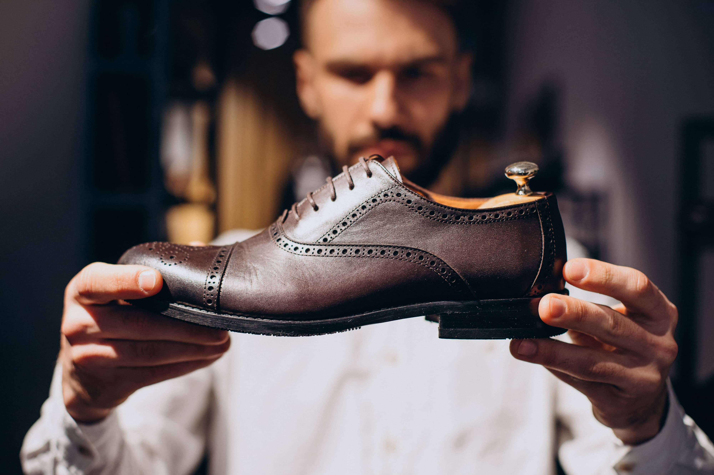

Sapato preto social - R$140
Comprar 🛒
O sapato social preto é a combinação perfeita entre elegância, conforto e versatilidade. Produzido com materiais de alta qualidade, ele foi desenvolvido para quem busca sofisticação em cada passo. Seu design clássico e acabamento impecável transmitem autoridade e estilo, sendo a escolha ideal para eventos formais, reuniões de trabalho e ocasiões especiais.
O interior é revestido com forro macio que proporciona conforto durante todo o dia, enquanto a sola antiderrapante garante segurança e firmeza ao caminhar. O brilho discreto do couro dá um toque refinado, tornando-o fácil de combinar com ternos, calças sociais ou até mesmo looks casuais mais elaborados.
Mais do que um calçado, o sapato social preto é um símbolo de confiança e bom gosto — o detalhe que completa qualquer visual com elegância atemporal.
 Sandalha simples - R$40
Comprar 🛒
Sandalha simples - R$40
Comprar 🛒
A sandália comum é sinônimo de leveza e praticidade para o dia a dia. Feita para proporcionar liberdade aos pés, ela combina conforto e simplicidade em um design funcional que se adapta a diferentes estilos e ocasiões. Seja para um passeio no parque, uma ida ao trabalho ou momentos de lazer, sua estrutura leve e tiras resistentes oferecem estabilidade e respirabilidade.
Com palmilha macia e formato anatômico, a sandália proporciona bem-estar mesmo após horas de uso. Seu visual versátil permite combinações com roupas leves, como vestidos, bermudas e calças jeans, mantendo sempre um toque casual e moderno.
Ideal para quem valoriza conforto sem abrir mão do estilo, essa sandália é o equilíbrio perfeito entre utilidade e beleza no dia a dia.